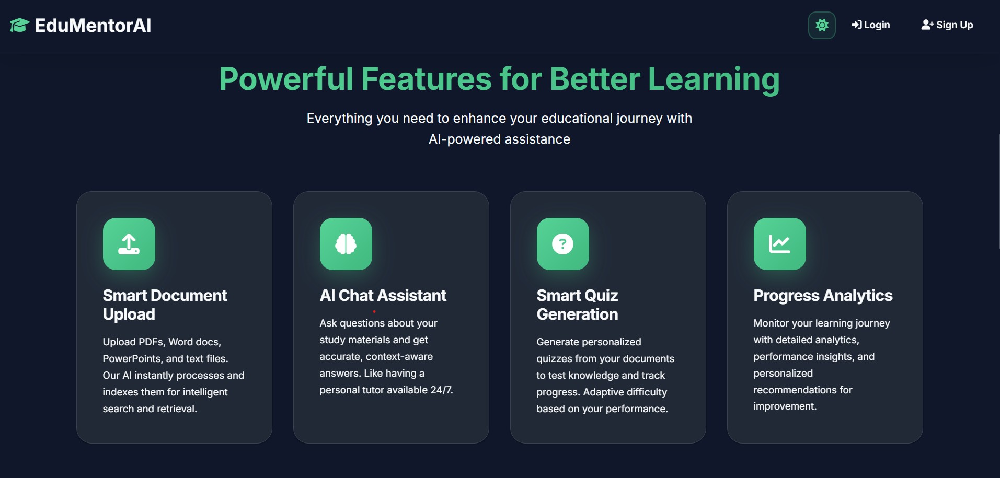
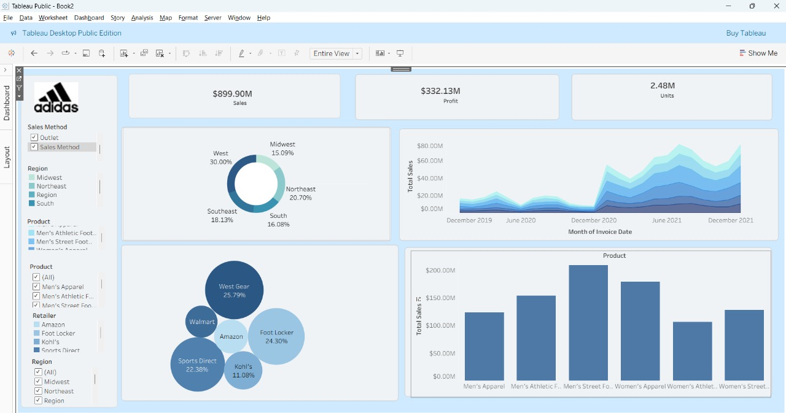
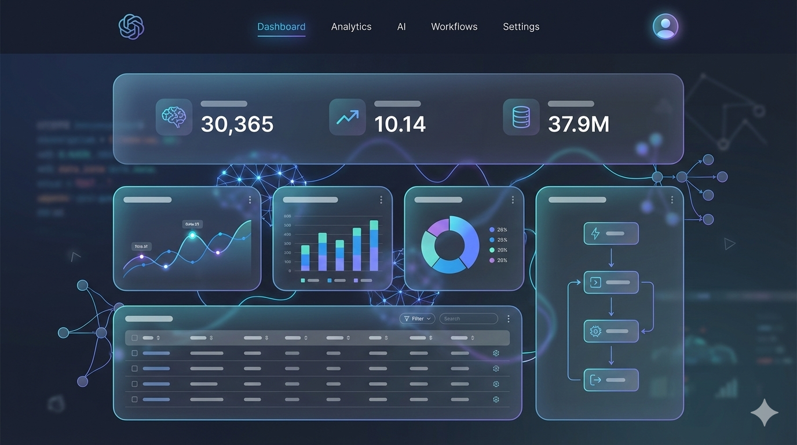
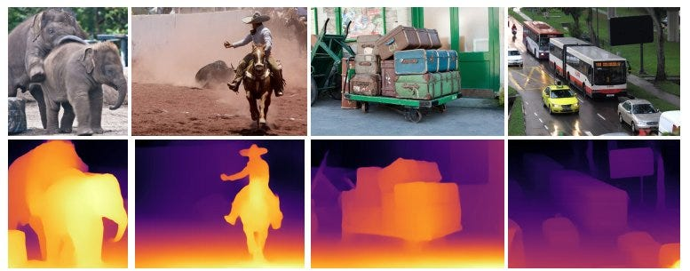

02. Skills & Technologies
Programming Languages
ML/DL Frameworks
 LangChain
LangChain
 CrewAI
CrewAI
MLOps & APIs
 MLflow
MLflow
Data & Tools
 n8n
n8n
Hello, I'm
Building intelligent systems that make a difference
I'm a Computer Engineering graduate focused on building practical machine learning and AI systems I work primarily with Python and modern ML stacks, including PyTorch, TensorFlow, scikit-learn, NumPy, and Pandas, with hands-on experience designing and modifying CNN architectures such as AlexNet and VGG.
I build LLM-powered and RAG-based applications using sentence-transformer embeddings, vector similarity search, and LangChain for prompt orchestration, memory management, and tool usage. I have implemented end-to-end AI chatbots, including a Tour Guide system, with clean, modular pipelines.
On the engineering side, I develop backend services using Django and FastAPI, design microservices architectures, and work extensively with PostgreSQL and SQL. I use Docker for containerization, MLflow for experiment tracking, and Streamlit for deploying interactive ML applications.
I also have experience in data engineering and BI, working with structured data pipelines, transformations, and analytics-ready datasets. I build dashboards and reports, write analytical SQL queries, and integrate automation workflows using n8n to connect data sources, AI services, and business processes.
LangChain
CrewAI
MLflow
n8n

Built a Django + REST API platform integrating RAG and LLMs for personalized learning support. Features quiz generation, content recommendations, student progress tracking, and an AI-powered slide generator using LLM summarization and Markdown-to-PPT conversion.

End-to-end ETL pipeline processing 10K+ sales records with automated cleaning and loading into PostgreSQL. Containerized with Docker Compose, features star schema data warehouse and interactive Tableau dashboard for sales trends and profitability insights.
Achieved 91% accuracy on the KArSL dataset for recognizing Arabic Sign Language (letters, numbers, and 18 verbs). Built real-time gesture recognition using deep learning with CNN + LSTM architecture.

Full-stack Django platform with authentication, enrollment, and course delivery. Integrated a BERT model for sentiment-based star ratings on student reviews, enhancing the learning experience with AI-driven feedback.

Real-time monocular depth estimation app using MiDaS and webcam input. Deployed via Streamlit with side-by-side RGB/depth visualization achieving 200ms latency for smooth real-time performance.
I'm currently open to new opportunities and collaborations. Whether you have a project in mind, want to discuss AI/ML, or just want to say hi, feel free to reach out!